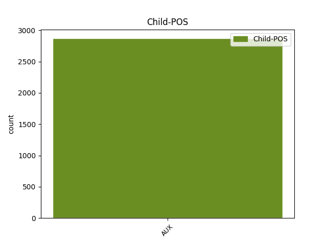

Distribution of features within this leaf


Agreement Rules sorted by frequency.
- When the dependent token is the conjunct(conj) of the head token, and the dependent token is AUX.
1 Iară _ _ _ _ 0 _ _ _
2 cînd _ _ _ _ 0 _ _ _
3 stăpînul _ _ _ _ 0 _ _ _
4 nu _ _ _ _ 0 _ _ _
5 va _ _ _ _ 0 _ _ _
6 avea avea VERB Vmii3s Mood=Ind|Number=Sing|Person=3|Tense=Imp|VerbForm=Fin 0 _ _ _
7 trebuință _ _ _ _ 0 _ _ _
8 de _ _ _ _ 0 _ _ _
9 arătură _ _ _ _ 0 _ _ _
10 , _ _ _ _ 0 _ _ _
11 și _ _ _ _ 0 _ _ _
12 va vrea AUX Vaip3s Mood=Ind|Number=Sing|Person=3|Tense=Pres 6 conj _ ref=COMPLETARE.4
13 ceare _ _ _ _ 0 _ _ _
14 bani _ _ _ _ 0 _ _ _
15 , _ _ _ _ 0 _ _ _
16 să _ _ _ _ 0 _ _ _
17 ia _ _ _ _ 0 _ _ _
18 de _ _ _ _ 0 _ _ _
19 plug _ _ _ _ 0 _ _ _
20 talere _ _ _ _ 0 _ _ _
21 patru _ _ _ _ 0 _ _ _
22 , _ _ _ _ 0 _ _ _
23 pentru _ _ _ _ 0 _ _ _
24 ziua _ _ _ _ 0 _ _ _
25 de _ _ _ _ 0 _ _ _
26 arătură _ _ _ _ 0 _ _ _
27 , _ _ _ _ 0 _ _ _
28 plătindu _ _ _ _ 0 _ _ _
29 -i _ _ _ _ 0 _ _ _
30 acești _ _ _ _ 0 _ _ _
31 bani _ _ _ _ 0 _ _ _
32 toți _ _ _ _ 0 _ _ _
33 oamenii _ _ _ _ 0 _ _ _
34 cîți _ _ _ _ 0 _ _ _
35 sînt _ _ _ _ 0 _ _ _
36 întovărășiți _ _ _ _ 0 _ _ _
37 la _ _ _ _ 0 _ _ _
38 acest _ _ _ _ 0 _ _ _
39 plug _ _ _ _ 0 _ _ _
40 . _ _ _ _ 0 _ _ _
1 Aseamenea _ _ _ _ 0 _ _ _
2 să _ _ _ _ 0 _ _ _
3 să _ _ _ _ 0 _ _ _
4 urmeaze urmeaze VERB Vmsp3 Mood=Sub|Person=3|Tense=Pres|VerbForm=Fin 0 _ _ _
5 de _ _ _ _ 0 _ _ _
6 Dumnialui _ _ _ _ 0 _ _ _
7 Vel _ _ _ _ 0 _ _ _
8 Spătariu _ _ _ _ 0 _ _ _
9 , _ _ _ _ 0 _ _ _
10 Dumnialui _ _ _ _ 0 _ _ _
11 Vel _ _ _ _ 0 _ _ _
12 Agă _ _ _ _ 0 _ _ _
13 și _ _ _ _ 0 _ _ _
14 de _ _ _ _ 0 _ _ _
15 Boerii _ _ _ _ 0 _ _ _
16 Ispravnici _ _ _ _ 0 _ _ _
17 , _ _ _ _ 0 _ _ _
18 cînd _ _ _ _ 0 _ _ _
19 iaste fi AUX Vaip3s Mood=Ind|Number=Sing|Person=3|Tense=Pres 4 mod _ ref=PART_V_CAP_3.15d
20 vreo _ _ _ _ 0 _ _ _
21 hotărîre _ _ _ _ 0 _ _ _
22 de _ _ _ _ 0 _ _ _
23 la _ _ _ _ 0 _ _ _
24 judecățile _ _ _ _ 0 _ _ _
25 Dumnialor _ _ _ _ 0 _ _ _
26 . _ _ _ _ 0 _ _ _
1 Cîți _ _ _ _ 0 _ _ _
2 din _ _ _ _ 0 _ _ _
3 cei _ _ _ _ 0 _ _ _
4 ce _ _ _ _ 0 _ _ _
5 au _ _ _ _ 0 _ _ _
6 judecată _ _ _ _ 0 _ _ _
7 vor vrea AUX Vaip3p Mood=Ind|Number=Plur|Person=3|Tense=Pres 24 subj _ ref=PART_V_CAP_4.5
8 da _ _ _ _ 0 _ _ _
9 în _ _ _ _ 0 _ _ _
10 scris _ _ _ _ 0 _ _ _
11 la _ _ _ _ 0 _ _ _
12 judecată _ _ _ _ 0 _ _ _
13 că _ _ _ _ 0 _ _ _
14 să _ _ _ _ 0 _ _ _
15 vor _ _ _ _ 0 _ _ _
16 mulțămi _ _ _ _ 0 _ _ _
17 pre _ _ _ _ 0 _ _ _
18 hotărîrea _ _ _ _ 0 _ _ _
19 acei _ _ _ _ 0 _ _ _
20 judecăți _ _ _ _ 0 _ _ _
21 , _ _ _ _ 0 _ _ _
22 aceia _ _ _ _ 0 _ _ _
23 nu _ _ _ _ 0 _ _ _
24 pot putea AUX Vaip3p Mood=Ind|Number=Plur|Person=3|Tense=Pres 0 _ _ _
25 porni _ _ _ _ 0 _ _ _
26 Apellație _ _ _ _ 0 _ _ _
27 . _ _ _ _ 0 _ _ _
1 Cine _ _ _ _ 0 _ _ _
2 va _ _ _ _ 0 _ _ _
3 arăta _ _ _ _ 0 _ _ _
4 copie _ _ _ _ 0 _ _ _
5 de _ _ _ _ 0 _ _ _
6 carte _ _ _ _ 0 _ _ _
7 , _ _ _ _ 0 _ _ _
8 iaste fi AUX Vaip3s Mood=Ind|Number=Sing|Person=3|Tense=Pres 0 _ _ _
9 datoriu _ _ _ _ 0 _ _ _
10 cînd _ _ _ _ 0 _ _ _
11 i _ _ _ _ 0 _ _ _
12 să _ _ _ _ 0 _ _ _
13 va vrea AUX Vaip3s Mood=Ind|Number=Sing|Person=3|Tense=Pres 8 mod@tcl _ ref=PART_V_CAP_2a.29
14 cere _ _ _ _ 0 _ _ _
15 să _ _ _ _ 0 _ _ _
16 scoață _ _ _ _ 0 _ _ _
17 și _ _ _ _ 0 _ _ _
18 pre _ _ _ _ 0 _ _ _
19 cea _ _ _ _ 0 _ _ _
20 adevărată _ _ _ _ 0 _ _ _
21 , _ _ _ _ 0 _ _ _
22 sau _ _ _ _ 0 _ _ _
23 îndată _ _ _ _ 0 _ _ _
24 avîndu _ _ _ _ 0 _ _ _
25 -o _ _ _ _ 0 _ _ _
26 la _ _ _ _ 0 _ _ _
27 îndemână _ _ _ _ 0 _ _ _
28 , _ _ _ _ 0 _ _ _
29 sau _ _ _ _ 0 _ _ _
30 cu _ _ _ _ 0 _ _ _
31 soroc _ _ _ _ 0 _ _ _
32 de _ _ _ _ 0 _ _ _
33 nu _ _ _ _ 0 _ _ _
34 o _ _ _ _ 0 _ _ _
35 va _ _ _ _ 0 _ _ _
36 avea _ _ _ _ 0 _ _ _
37 la _ _ _ _ 0 _ _ _
38 îndemână _ _ _ _ 0 _ _ _
39 . _ _ _ _ 0 _ _ _
1 De _ _ _ _ 0 _ _ _
2 să _ _ _ _ 0 _ _ _
3 va _ _ _ _ 0 _ _ _
4 zălogi _ _ _ _ 0 _ _ _
5 același _ _ _ _ 0 _ _ _
6 zălog _ _ _ _ 0 _ _ _
7 în _ _ _ _ 0 _ _ _
8 două _ _ _ _ 0 _ _ _
9 cursuri _ _ _ _ 0 _ _ _
10 de _ _ _ _ 0 _ _ _
11 vremi _ _ _ _ 0 _ _ _
12 , _ _ _ _ 0 _ _ _
13 la _ _ _ _ 0 _ _ _
14 doi _ _ _ _ 0 _ _ _
15 împrumutători _ _ _ _ 0 _ _ _
16 , _ _ _ _ 0 _ _ _
17 și _ _ _ _ 0 _ _ _
18 unuia _ _ _ _ 0 _ _ _
19 din _ _ _ _ 0 _ _ _
20 ei _ _ _ _ 0 _ _ _
21 să _ _ _ _ 0 _ _ _
22 vor _ _ _ _ 0 _ _ _
23 da _ _ _ _ 0 _ _ _
24 cele _ _ _ _ 0 _ _ _
25 adevărate _ _ _ _ 0 _ _ _
26 seneturi _ _ _ _ 0 _ _ _
27 ale _ _ _ _ 0 _ _ _
28 acelui _ _ _ _ 0 _ _ _
29 lucru _ _ _ _ 0 _ _ _
30 , _ _ _ _ 0 _ _ _
31 iară _ _ _ _ 0 _ _ _
32 celuilalt _ _ _ _ 0 _ _ _
33 nu _ _ _ _ 0 _ _ _
34 , _ _ _ _ 0 _ _ _
35 atuncea _ _ _ _ 0 _ _ _
36 să _ _ _ _ 0 _ _ _
37 să _ _ _ _ 0 _ _ _
38 protimisească _ _ _ _ 0 _ _ _
39 cel _ _ _ _ 0 _ _ _
40 ce _ _ _ _ 0 _ _ _
41 va vrea AUX Vaip3s Mood=Ind|Number=Sing|Person=3|Tense=Pres 0 _ _ _
42 avea avea AUX Vaii3s Mood=Ind|Number=Sing|Person=3|Tense=Imp 41 comp:aux _ ref=PART_III_CAP_11.4
43 seneturile _ _ _ _ 0 _ _ _
44 , _ _ _ _ 0 _ _ _
45 iar _ _ _ _ 0 _ _ _
46 de _ _ _ _ 0 _ _ _
47 nu _ _ _ _ 0 _ _ _
48 să _ _ _ _ 0 _ _ _
49 vor _ _ _ _ 0 _ _ _
50 da _ _ _ _ 0 _ _ _
51 seneturile _ _ _ _ 0 _ _ _
52 , _ _ _ _ 0 _ _ _
53 atuncea _ _ _ _ 0 _ _ _
54 să _ _ _ _ 0 _ _ _
55 să _ _ _ _ 0 _ _ _
56 protimisească _ _ _ _ 0 _ _ _
57 cel _ _ _ _ 0 _ _ _
58 dintîiu _ _ _ _ 0 _ _ _
59 după _ _ _ _ 0 _ _ _
60 cursul _ _ _ _ 0 _ _ _
61 vremii _ _ _ _ 0 _ _ _
62 zălogaș _ _ _ _ 0 _ _ _
63 . _ _ _ _ 0 _ _ _
1 Cînd _ _ _ _ 0 _ _ _
2 cel _ _ _ _ 0 _ _ _
3 ce _ _ _ _ 0 _ _ _
4 face _ _ _ _ 0 _ _ _
5 diiată _ _ _ _ 0 _ _ _
6 are _ _ _ _ 0 _ _ _
7 numai _ _ _ _ 0 _ _ _
8 un _ _ _ _ 0 _ _ _
9 moștenitoriu _ _ _ _ 0 _ _ _
10 din _ _ _ _ 0 _ _ _
11 jos _ _ _ _ 0 _ _ _
12 sau _ _ _ _ 0 _ _ _
13 din _ _ _ _ 0 _ _ _
14 sus _ _ _ _ 0 _ _ _
15 , _ _ _ _ 0 _ _ _
16 atunci _ _ _ _ 0 _ _ _
17 după _ _ _ _ 0 _ _ _
18 datorie _ _ _ _ 0 _ _ _
19 să _ _ _ _ 0 _ _ _
20 cade _ _ _ _ 0 _ _ _
21 ca _ _ _ _ 0 _ _ _
22 jumătate _ _ _ _ 0 _ _ _
23 din _ _ _ _ 0 _ _ _
24 averea _ _ _ _ 0 _ _ _
25 lui _ _ _ _ 0 _ _ _
26 să _ _ _ _ 0 _ _ _
27 o _ _ _ _ 0 _ _ _
28 lase _ _ _ _ 0 _ _ _
29 moștenitoriului _ _ _ _ 0 _ _ _
30 , _ _ _ _ 0 _ _ _
31 iară _ _ _ _ 0 _ _ _
32 cînd _ _ _ _ 0 _ _ _
33 are _ _ _ _ 0 _ _ _
34 doi _ _ _ _ 0 _ _ _
35 , _ _ _ _ 0 _ _ _
36 atunci _ _ _ _ 0 _ _ _
37 să _ _ _ _ 0 _ _ _
38 cade _ _ _ _ 0 _ _ _
39 să _ _ _ _ 0 _ _ _
40 le _ _ _ _ 0 _ _ _
41 lase _ _ _ _ 0 _ _ _
42 doao _ _ _ _ 0 _ _ _
43 părți _ _ _ _ 0 _ _ _
44 din _ _ _ _ 0 _ _ _
45 trei _ _ _ _ 0 _ _ _
46 , _ _ _ _ 0 _ _ _
47 și _ _ _ _ 0 _ _ _
48 cînd _ _ _ _ 0 _ _ _
49 are _ _ _ _ 0 _ _ _
50 trei _ _ _ _ 0 _ _ _
51 , _ _ _ _ 0 _ _ _
52 atunci _ _ _ _ 0 _ _ _
53 trei _ _ _ _ 0 _ _ _
54 părți _ _ _ _ 0 _ _ _
55 din _ _ _ _ 0 _ _ _
56 patru _ _ _ _ 0 _ _ _
57 , _ _ _ _ 0 _ _ _
58 și _ _ _ _ 0 _ _ _
59 cealelalte _ _ _ _ 0 _ _ _
60 , _ _ _ _ 0 _ _ _
61 iară _ _ _ _ 0 _ _ _
62 jumătate _ _ _ _ 0 _ _ _
63 partea _ _ _ _ 0 _ _ _
64 ( _ _ _ _ 0 _ _ _
65 cînd _ _ _ _ 0 _ _ _
66 are _ _ _ _ 0 _ _ _
67 un _ _ _ _ 0 _ _ _
68 moștean _ _ _ _ 0 _ _ _
69 ) _ _ _ _ 0 _ _ _
70 sau _ _ _ _ 0 _ _ _
71 a _ _ _ _ 0 _ _ _
72 treia _ _ _ _ 0 _ _ _
73 parte _ _ _ _ 0 _ _ _
74 ( _ _ _ _ 0 _ _ _
75 cînd _ _ _ _ 0 _ _ _
76 are _ _ _ _ 0 _ _ _
77 doi _ _ _ _ 0 _ _ _
78 ) _ _ _ _ 0 _ _ _
79 sau _ _ _ _ 0 _ _ _
80 a _ _ _ _ 0 _ _ _
81 patra _ _ _ _ 0 _ _ _
82 ( _ _ _ _ 0 _ _ _
83 cînd _ _ _ _ 0 _ _ _
84 are _ _ _ _ 0 _ _ _
85 trei _ _ _ _ 0 _ _ _
86 ) _ _ _ _ 0 _ _ _
87 și _ _ _ _ 0 _ _ _
88 ceilaltă _ _ _ _ 0 _ _ _
89 iaste _ _ _ _ 0 _ _ _
90 slobod _ _ _ _ 0 _ _ _
91 să _ _ _ _ 0 _ _ _
92 o _ _ _ _ 0 _ _ _
93 dăruiască dărui VERB Vmsp3 Mood=Sub|Person=3|Tense=Pres|VerbForm=Fin 0 _ _ _
94 cui _ _ _ _ 0 _ _ _
95 va vrea AUX Vaip3s Mood=Ind|Number=Sing|Person=3|Tense=Pres 93 comp:pred _ ref=PART_IV_CAP_3c.33
96 voi _ _ _ _ 0 _ _ _
97 . _ _ _ _ 0 _ _ _
1 Căci _ _ _ _ 0 _ _ _
2 atunci _ _ _ _ 0 _ _ _
3 ce _ _ _ _ 0 _ _ _
4 e fi AUX Vaip3s Mood=Ind|Number=Sing|Person=3|Tense=Pres 8 subj@pass _ ref=PART_IV_CAP_3c.41.3b
5 mai _ _ _ _ 0 _ _ _
6 mult _ _ _ _ 0 _ _ _
7 să _ _ _ _ 0 _ _ _
8 scoate scoate VERB Vmip3s Mood=Ind|Number=Sing|Person=3|Tense=Pres|VerbForm=Fin 0 _ _ _
9 din _ _ _ _ 0 _ _ _
10 legaturi _ _ _ _ 0 _ _ _
11 , _ _ _ _ 0 _ _ _
12 și _ _ _ _ 0 _ _ _
13 să _ _ _ _ 0 _ _ _
14 dă _ _ _ _ 0 _ _ _
15 moștenitorilor _ _ _ _ 0 _ _ _
16 , _ _ _ _ 0 _ _ _
17 iară _ _ _ _ 0 _ _ _
18 cealelalte _ _ _ _ 0 _ _ _
19 orîndueli _ _ _ _ 0 _ _ _
20 din _ _ _ _ 0 _ _ _
21 diiată _ _ _ _ 0 _ _ _
22 să _ _ _ _ 0 _ _ _
23 împlinesc _ _ _ _ 0 _ _ _
24 . _ _ _ _ 0 _ _ _
1 De _ _ _ _ 0 _ _ _
2 să _ _ _ _ 0 _ _ _
3 vor _ _ _ _ 0 _ _ _
4 chezășui _ _ _ _ 0 _ _ _
5 mulți _ _ _ _ 0 _ _ _
6 pentru _ _ _ _ 0 _ _ _
7 aceaiași _ _ _ _ 0 _ _ _
8 datorie _ _ _ _ 0 _ _ _
9 , _ _ _ _ 0 _ _ _
10 iaste _ _ _ _ 0 _ _ _
11 datoriu _ _ _ _ 0 _ _ _
12 fieșcare _ _ _ _ 0 _ _ _
13 dintr- _ _ _ _ 0 _ _ _
14 înșii _ _ _ _ 0 _ _ _
15 pre _ _ _ _ 0 _ _ _
16 toată _ _ _ _ 0 _ _ _
17 datoria _ _ _ _ 0 _ _ _
18 , _ _ _ _ 0 _ _ _
19 și _ _ _ _ 0 _ _ _
20 împrumutătoriul _ _ _ _ 0 _ _ _
21 silește sili VERB Vmip3s Mood=Ind|Number=Sing|Person=3|Tense=Pres|VerbForm=Fin 0 _ _ _
22 pre _ _ _ _ 0 _ _ _
23 care _ _ _ _ 0 _ _ _
24 va vrea AUX Vaip3s Mood=Ind|Number=Sing|Person=3|Tense=Pres 21 comp:obj@pmod _ ref=PART_III_CAP_12.6
25 vrea _ _ _ _ 0 _ _ _
26 . _ _ _ _ 0 _ _ _
1 Noi _ _ _ _ 0 _ _ _
2 , _ _ _ _ 0 _ _ _
3 nebuni _ _ _ _ 0 _ _ _
4 pentru _ _ _ _ 0 _ _ _
5 Hristos _ _ _ _ 0 _ _ _
6 ; _ _ _ _ 0 _ _ _
7 noi _ _ _ _ 0 _ _ _
8 , _ _ _ _ 0 _ _ _
9 slabi _ _ _ _ 0 _ _ _
10 , _ _ _ _ 0 _ _ _
11 iară _ _ _ _ 0 _ _ _
12 voi tu PRON Pp2-pr Case=Acc,Nom|Number=Plur|Person=1|PronType=Prs 0 _ _ _
13 , _ _ _ _ 0 _ _ _
14 tari _ _ _ _ 0 _ _ _
15 , _ _ _ _ 0 _ _ _
16 voi vrea AUX Vaip1s Mood=Ind|Number=Sing|Person=1|Tense=Pres 12 appos _ ref=PAVEL_1.CORINT_4.10
17 boiari _ _ _ _ 0 _ _ _
18 , _ _ _ _ 0 _ _ _
19 iară _ _ _ _ 0 _ _ _
20 noi _ _ _ _ 0 _ _ _
21 , _ _ _ _ 0 _ _ _
22 fără _ _ _ _ 0 _ _ _
23 cinste _ _ _ _ 0 _ _ _
24 . _ _ _ _ 0 _ _ _
1 Cînd _ _ _ _ 0 _ _ _
2 cineva _ _ _ _ 0 _ _ _
3 neavînd _ _ _ _ 0 _ _ _
4 rude _ _ _ _ 0 _ _ _
5 de _ _ _ _ 0 _ _ _
6 sus _ _ _ _ 0 _ _ _
7 și _ _ _ _ 0 _ _ _
8 de _ _ _ _ 0 _ _ _
9 jos _ _ _ _ 0 _ _ _
10 , _ _ _ _ 0 _ _ _
11 are _ _ _ _ 0 _ _ _
12 de _ _ _ _ 0 _ _ _
13 alăturea _ _ _ _ 0 _ _ _
14 , _ _ _ _ 0 _ _ _
15 slobod _ _ _ _ 0 _ _ _
16 iaste _ _ _ _ 0 _ _ _
17 să _ _ _ _ 0 _ _ _
18 lase lăsa VERB Vmsp3 Mood=Sub|Person=3|Tense=Pres|VerbForm=Fin 0 _ _ _
19 moștenitoriu _ _ _ _ 0 _ _ _
20 pre _ _ _ _ 0 _ _ _
21 carele _ _ _ _ 0 _ _ _
22 va vrea AUX Vaip3s Mood=Ind|Number=Sing|Person=3|Tense=Pres 18 mod@pmod _ ref=PART_IV_CAP_3c.32a
23 voi _ _ _ _ 0 _ _ _
24 dintre _ _ _ _ 0 _ _ _
25 dînșii _ _ _ _ 0 _ _ _
26 , _ _ _ _ 0 _ _ _
27 sau _ _ _ _ 0 _ _ _
28 din _ _ _ _ 0 _ _ _
29 cei _ _ _ _ 0 _ _ _
30 streini _ _ _ _ 0 _ _ _
31 pre _ _ _ _ 0 _ _ _
32 cel _ _ _ _ 0 _ _ _
33 cinstit _ _ _ _ 0 _ _ _
34 , _ _ _ _ 0 _ _ _
35 sau _ _ _ _ 0 _ _ _
36 pre _ _ _ _ 0 _ _ _
37 muerea _ _ _ _ 0 _ _ _
38 sa _ _ _ _ 0 _ _ _
39 , _ _ _ _ 0 _ _ _
40 și _ _ _ _ 0 _ _ _
41 muerea _ _ _ _ 0 _ _ _
42 pre _ _ _ _ 0 _ _ _
43 bărbatul _ _ _ _ 0 _ _ _
44 său _ _ _ _ 0 _ _ _
45 . _ _ _ _ 0 _ _ _
1 Iară _ _ _ _ 0 _ _ _
2 aceasta _ _ _ _ 0 _ _ _
3 zic _ _ _ _ 0 _ _ _
4 , _ _ _ _ 0 _ _ _
5 pînă _ _ _ _ 0 _ _ _
6 când _ _ _ _ 0 _ _ _
7 iaste fi AUX Vaip3s Mood=Ind|Number=Sing|Person=3|Tense=Pres 15 mod@tmod _ ref=PAVEL_GALAT_4.1
8 moșteanul _ _ _ _ 0 _ _ _
9 poroboc _ _ _ _ 0 _ _ _
10 , _ _ _ _ 0 _ _ _
11 în _ _ _ _ 0 _ _ _
12 nemică _ _ _ _ 0 _ _ _
13 nu _ _ _ _ 0 _ _ _
14 să _ _ _ _ 0 _ _ _
15 osebeaște osebi VERB Vmip3s Mood=Ind|Number=Sing|Person=3|Tense=Pres|VerbForm=Fin 0 _ _ _
16 de _ _ _ _ 0 _ _ _
17 slugă _ _ _ _ 0 _ _ _
18 , _ _ _ _ 0 _ _ _
19 săva _ _ _ _ 0 _ _ _
20 că _ _ _ _ 0 _ _ _
21 e _ _ _ _ 0 _ _ _
22 domnu _ _ _ _ 0 _ _ _
23 tuturora _ _ _ _ 0 _ _ _
24 . _ _ _ _ 0 _ _ _
1 Sau _ _ _ _ 0 _ _ _
2 de _ _ _ _ 0 _ _ _
3 va _ _ _ _ 0 _ _ _
4 ceare _ _ _ _ 0 _ _ _
5 ou _ _ _ _ 0 _ _ _
6 , _ _ _ _ 0 _ _ _
7 au avea AUX Vaip3p Mood=Ind|Number=Plur|Person=3|Tense=Pres 10 discourse _ ref=LUCA11.12
8 da _ _ _ _ 0 _ _ _
9 -i _ _ _ _ 0 _ _ _
10 -va vrea AUX Vaip3s Mood=Ind|Number=Sing|Person=3|Tense=Pres 0 _ _ _
11 lui _ _ _ _ 0 _ _ _
12 scorpie _ _ _ _ 0 _ _ _
13 ? _ _ _ _ 0 _ _ _
1 Nime _ _ _ _ 0 _ _ _
2 al _ _ _ _ 0 _ _ _
3 lui _ _ _ _ 0 _ _ _
4 să _ _ _ _ 0 _ _ _
5 nu _ _ _ _ 0 _ _ _
6 caute _ _ _ _ 0 _ _ _
7 , _ _ _ _ 0 _ _ _
8 ce _ _ _ _ 0 _ _ _
9 fietecine fieștecine PRON Pi3-sr Case=Acc,Nom|Number=Sing|Person=3|PronType=Ind 0 _ _ _
10 carele _ _ _ _ 0 _ _ _
11 -s fi AUX Vaip3p Mood=Ind|Number=Plur|Person=3|Tense=Pres 9 orphan _ ref=PAVEL_1.CORINT_10.24
12 a _ _ _ _ 0 _ _ _
13 altuia _ _ _ _ 0 _ _ _
14 . _ _ _ _ 0 _ _ _
Disagree Examples:
1 Și _ _ _ _ 0 _ _ _
2 varecine _ _ _ _ 0 _ _ _
3 nu _ _ _ _ 0 _ _ _
4 vor vrea AUX Vaip3p Mood=Ind|Number=Plur|Person=3|Tense=Pres 19 mod _ ref=MARC6.11
5 priimi _ _ _ _ 0 _ _ _
6 pre _ _ _ _ 0 _ _ _
7 voi _ _ _ _ 0 _ _ _
8 , _ _ _ _ 0 _ _ _
9 nece _ _ _ _ 0 _ _ _
10 vor _ _ _ _ 0 _ _ _
11 asculta _ _ _ _ 0 _ _ _
12 pre _ _ _ _ 0 _ _ _
13 voi _ _ _ _ 0 _ _ _
14 , _ _ _ _ 0 _ _ _
15 eșind _ _ _ _ 0 _ _ _
16 de _ _ _ _ 0 _ _ _
17 acolea _ _ _ _ 0 _ _ _
18 , _ _ _ _ 0 _ _ _
19 scuturați scutura VERB Vmm-2p Mood=Imp|Number=Plur|Person=2|VerbForm=Fin 0 _ _ _
20 prahul _ _ _ _ 0 _ _ _
21 de _ _ _ _ 0 _ _ _
22 supt _ _ _ _ 0 _ _ _
23 picioarele _ _ _ _ 0 _ _ _
24 voastre _ _ _ _ 0 _ _ _
25 , _ _ _ _ 0 _ _ _
26 să _ _ _ _ 0 _ _ _
27 fie _ _ _ _ 0 _ _ _
28 aceasta _ _ _ _ 0 _ _ _
29 mărturie _ _ _ _ 0 _ _ _
30 spre _ _ _ _ 0 _ _ _
31 ei _ _ _ _ 0 _ _ _
32 . _ _ _ _ 0 _ _ _
1 Zise _ _ _ _ 0 _ _ _
2 craiu _ _ _ _ 0 _ _ _
3 featei _ _ _ _ 0 _ _ _
4 : _ _ _ _ 0 _ _ _
5 Ceare cere VERB Vmm-2s--p Mood=Imp|Number=Sing|Person=2|Polarity=Pos|VerbForm=Fin 0 _ _ _
6 de _ _ _ _ 0 _ _ _
7 la _ _ _ _ 0 _ _ _
8 mine _ _ _ _ 0 _ _ _
9 măcar _ _ _ _ 0 _ _ _
10 ce _ _ _ _ 0 _ _ _
11 vrei _ _ _ _ 0 _ _ _
12 , _ _ _ _ 0 _ _ _
13 și _ _ _ _ 0 _ _ _
14 -ți _ _ _ _ 0 _ _ _
15 voiu vrea AUX Vaip1s Mood=Ind|Number=Sing|Person=1|Tense=Pres 5 conj _ ref=MARC6.22
16 da _ _ _ _ 0 _ _ _
17 ! _ _ _ _ 0 _ _ _
1 Și _ _ _ _ 0 _ _ _
2 giură _ _ _ _ 0 _ _ _
3 ei _ _ _ _ 0 _ _ _
4 că _ _ _ _ 0 _ _ _
5 : _ _ _ _ 0 _ _ _
6 Au _ _ _ _ 0 _ _ _
7 ce _ _ _ _ 0 _ _ _
8 vei vrea AUX Vaip2s Mood=Ind|Number=Sing|Person=2|Tense=Pres 15 mod _ ref=MARC6.23
9 ceare _ _ _ _ 0 _ _ _
10 de _ _ _ _ 0 _ _ _
11 la _ _ _ _ 0 _ _ _
12 mine _ _ _ _ 0 _ _ _
13 da _ _ _ _ 0 _ _ _
14 -ți _ _ _ _ 0 _ _ _
15 -voiu vrea AUX Vaip1s Mood=Ind|Number=Sing|Person=1|Tense=Pres 0 _ _ _
16 ție _ _ _ _ 0 _ _ _
17 , _ _ _ _ 0 _ _ _
18 pînă _ _ _ _ 0 _ _ _
19 la _ _ _ _ 0 _ _ _
20 giumătate _ _ _ _ 0 _ _ _
21 de _ _ _ _ 0 _ _ _
22 țara _ _ _ _ 0 _ _ _
23 mea _ _ _ _ 0 _ _ _
24 . _ _ _ _ 0 _ _ _
1 Și _ _ _ _ 0 _ _ _
2 zise _ _ _ _ 0 _ _ _
3 ei _ _ _ _ 0 _ _ _
4 pentru _ _ _ _ 0 _ _ _
5 acest _ _ _ _ 0 _ _ _
6 cuvînt _ _ _ _ 0 _ _ _
7 : _ _ _ _ 0 _ _ _
8 Pasă păsa VERB Vmm-2s--p Mood=Imp|Number=Sing|Person=2|Polarity=Pos|VerbForm=Fin 0 _ _ _
9 , _ _ _ _ 0 _ _ _
10 eșit _ _ _ _ 0 _ _ _
11 -au avea AUX Vaip3p Mood=Ind|Number=Plur|Person=3|Tense=Pres 8 conj _ ref=MARC7.29
12 dracul _ _ _ _ 0 _ _ _
13 den _ _ _ _ 0 _ _ _
14 fata _ _ _ _ 0 _ _ _
15 ta _ _ _ _ 0 _ _ _
16 . _ _ _ _ 0 _ _ _
1 Și _ _ _ _ 0 _ _ _
2 căutînd _ _ _ _ 0 _ _ _
3 spre _ _ _ _ 0 _ _ _
4 ceriu _ _ _ _ 0 _ _ _
5 , _ _ _ _ 0 _ _ _
6 suspină _ _ _ _ 0 _ _ _
7 și _ _ _ _ 0 _ _ _
8 zise _ _ _ _ 0 _ _ _
9 lui _ _ _ _ 0 _ _ _
10 : _ _ _ _ 0 _ _ _
11 Effata Effata VERB Vmm-2s--p Mood=Imp|Number=Sing|Person=2|Polarity=Pos|VerbForm=Fin 0 _ _ _
12 , _ _ _ _ 0 _ _ _
13 ce _ _ _ _ 0 _ _ _
14 iaste fi AUX Vaip3s Mood=Ind|Number=Sing|Person=3|Tense=Pres 11 appos _ ref=MARC7.34|SpaceAfter=No
15 : _ _ _ _ 0 _ _ _
16 Deșchide _ _ _ _ 0 _ _ _
17 -te _ _ _ _ 0 _ _ _
18 . _ _ _ _ 0 _ _ _